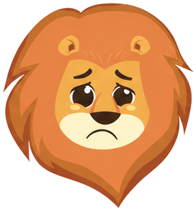
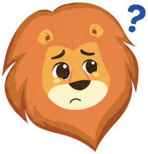
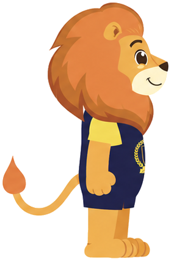
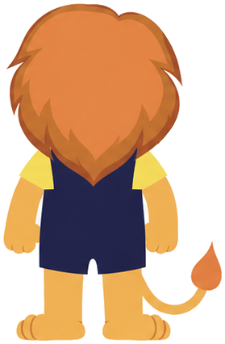

Chào hỏi
greet
loop
Đăng nhập, mở đầu lộ trình — lắc lư quanh bàn chân, chốc chốc vung cả hai tay lên "chào cả lớp!".
Vui vẻ
happy
loop
Mặc định khi đồng hành: nhún theo nhịp thở, chớp mắt mỗi 3–6s, thi thoảng miệng mở cười toe.
Thích thú
excited
loop
Mở chương mới — nảy tưng tưng squash & stretch, mặt đảo giữa cười lớn và mắt tròn "ồ!".
Đạt kết quả
trophy
bùng 1 lần → idle
Thành thạo node (+30 XP), hoàn thành bài, lên hạng — pop vào với quầng nắng gold, rồi lắng về nhịp thở.
Chăm chỉ
diligent
loop
Chuỗi bài dài, đang cày đề — gõ phím lạch cạch, giọt mồ hôi lăn nhưng phím vẫn nảy tia vàng.
Tập trung học
focus
loop
Trong phiên làm bài — chỉ nhịp thở thật chậm và quầng sáng dịu, không gì được phép làm phiền.
Suy nghĩ
think
loop
Guide agent đang soạn gợi ý — tay chống cằm nghiêng 6°, chốc chốc buông tay ngước lên "à?", bong bóng ba chấm gõ nhịp.
Bất ngờ
surprised
loop
Em giải theo cách thầy không ngờ tới — đang cười bình thường thì giật nảy người, mắt trợn tròn, "!" bật lên.
Tự tin
proud
loop
Hồ sơ, huy hiệu, hạng Vàng — đứng dáng rồi xoay nhẹ sang góc ¾ như đang tạo dáng chụp hình.
Ngủ / nghỉ
sleepy
loop
Đêm muộn — thở sâu chậm rãi, miệng khép mở theo từng hơi, chuỗi Z trôi dần lên.


Buồn
sad
loop
Rời phiên giữa chừng, trượt mục tiêu — vai trĩu, lông mày nhíu run lên từng đợt, mắt nhắm chớp chậm, lệ lăn.
Ba trạng thái khó — bản chốt
Nhớ nhung chốt B (tim tan vỡ dần) · Hỗn loạn chốt A · Nổi loạn bản mới: xoay người 4 frame như 3D.
Nhớ nhung
miss
chốt B
loop 6s
Lâu không mở app — tim trên đầu đập chậm dần, nứt làm đôi rồi rơi lịm; gương mặt từ ngóng chờ chuyển sang buồn thiu, rồi nhớ lại từ đầu.
Hỗn loạn / rối trí
chaos
chốt A
loop
Node cần ôn dồn ứ, dữ liệu đồng bộ — lắc đầu liên hồi giữa vòng xoáy ?!, mặt bối rối thi thoảng bật sang hoảng hốt trợn tròn.


Nổi loạn / bướng
rebel
bản mới
loop 7.5s
Effort gate: em đòi đáp án — "hứ" một cái rồi xoay người thật qua 4 frame (chính diện → ¾ → nghiêng → lưng), dỗi một lúc, ngoái lại liếc xem em nghĩ chưa, rồi lại quay đi.
Port vào app — 3 file sẵn sàng
Cùng kiến trúc hai tầng đang có: hoán frame trong component + choreography CSS. Mỗi mood giờ có lớp overlay mặt/tư thế riêng (mày, khẩu hình, tay, 4 góc xoay). Tôn trọng prefers-reduced-motion như bản gốc.
<Lion mood="miss" size={120} /> // tim tan vỡ dần + mặt đổi theo
<Lion mood="rebel" /> // xoay người 4 frame như 3D
<Lion mood="trophy" /> // node mastered — bùng 1 lần rồi về idle
<Lion mood="chaos" /> · "happy" · "diligent" · "focus" · "proud" · …
4 sprite mới cắt từ sheet turnaround (turn-front · turn-34 · turn-side · turn-back) nằm trong brand/lion/ — copy vào apps/web/public/brand/lion/.